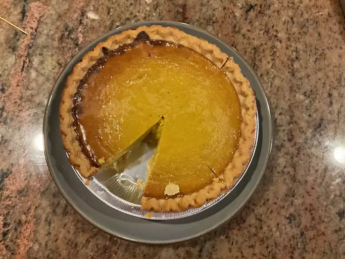

Pumpkin Pie

Description
A Thanksgiving dessert staple made with store-bought crust and canned
pumpkin puree. This is a simple and quick recipe that's perfect for anyone
who needs a last-minute Thanksgiving dish.
Ingredients
- 15 ounce can of pumpkin puree
- 14 ounce can of Eagle Brand Sweetened Condensed Milk
- 2 large eggs
- 1/2 teaspoon ground ginger
- 1/2 teaspoon ground nutmeg
- 1/2 teaspoon salt
- 9 inch unbaked pie crust
Steps
- Gather all ingredients.
- Preheat the oven to 425 degrees F (220 degrees C)
-
Whisk pumpkin puree, condensed milk, eggs, cinnamon, ginger, nutmeg, and
salt together in a medium bowl until smooth.
- Pour into crust.
- Bake in the preheated oven for 15 minutes.
-
Reduce oven temperature to 350 degrees F (175 degrees C) and continue
baking until a knife inserted 1 inch from the crust comes out clean, 35
to 40 minutes.
- Let cool before serving.